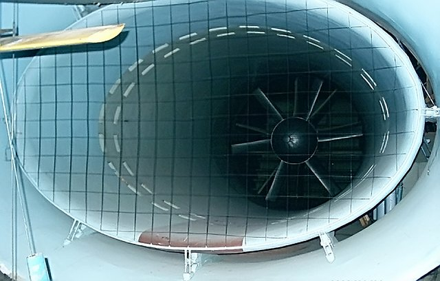

Лаборатория общей аэродинамики располагает комплексом аэродинамических установок для учебных и научных целей.
Лаборатория общей аэродинамики располагает комплексом аэродинамических установок, позволяющих проводить исследования аэродинамических характеристик и обтекания тел разнообразной формы в весьма широком диапазоне чисел Рейнольдса, начальной турбулентности набегающего потока, ориентации тел и др.
При разработке и создании аэродинамических установок использовался передовой опыт и достижения ЦАГИ им. Н.Е. Жуковского.
В процессе эксплуатации аэродинамические комплексы непрерывно совершенствовались, аэродинамические установки модернизировались, оснащались приборным оборудованием, разрабатывались и внедрялись новые методы исследований, измерительные системы с автоматизацией сбора и обработки результатов измерений.
Крупнейшей аэродинамической установкой лаборатории является дозвуковая аэродинамическая труба А-6, применяемая для исследования поведения тел в потоке воздуха и деформации потока при обтекания элементов рельефа, строительных сооружений, инженерных конструкций и наземных транспортных средств.
На аэродинамических установках лаборатории решаются различные задачи, среди которых исследования аэродинамических характеристик летательных аппаратов и их элементов, наземных транспортных средств, аэродинамика жилых, спортивных и промышленных зданий и сооружений.
Аэродинамические установки лаборатории используются также в учебном процессе. Студенты механико-математического факультета МГУ им. М.В. Ломоносова проходят в лаборатории практикум по аэромеханике, знакомятся с работой установок, приборным оборудованием и методами экспериментальных исследований.
Лаборатория располагает следующими установками: А-6, А-10А, А-1У, А-2У, А-3У, А-4У
Аэродинамическая труба А-6 является основной установкой лаборатории общей аэродинамики для проведения экспериментальных исследований при малых дозвуковых скоростях.
Труба А-6 – замкнутая, одноканальная с открытой рабочей частью эллиптического сечения. Размеры рабочей части трубы: длина – 4 м, большая ось эллипса – 4 м, малая ось – 2,34 м, площадь поперечного сечения рабочей части – 7,32 м2, степень поджатия сопла n=5,09.
Приводом трубы служит шестилопастный вентилятор диаметром 4,4 м, вращаемый двигателем постоянного тока мощностью 2 МВт. Изменение скорости потока в рабочей части достигается изменением числа оборотов двигателя в пределах от 0 до 750 оборотов в минуту, осуществляемым по схеме Леонардо.
Максимальная скорость потока в рабочей части трубы при наличии модели равна 50 м/с.
Для увеличения интенсивности турбулентности в рабочей части до ? ? 10% установка снабжена набором съемных сеток-кассет, устанавливаемых на срезе сопла. Числа Рейнольдса, подсчитанные для модели с линейными характерными размерами 0,5 ? l ? 1,5 м, соответствуют диапазону 105 ? Re ? 107, что обеспечивает изучение аэродинамики транспортных средств, промышленных сооружений и летательных аппаратов, как в докритической, так и за критической зонах обтекания.
Труба оборудована шестикомпонентными аэродинамическими весами для измерения стационарных сил и моментов.
По результатам метрологической аттестации методик измерения параметров потока в трубе А-6 установлено, что она пригодна для проведения научных и прикладных исследований аэродинамических характеристик неподвижных или авторотирующих тел.
Дозвуковая аэродинамическая установка А-10А является аэродинамической трубой прямого действия с камерой Эйфеля.
Труба может работать по двум схемам: с открытой рабочей частью и камерой Эйфеля, и закрытой рабочей частью. Рабочая часть имеет форму восьмигранного сечения высотой 800 мм, длиной 1360 мм. Сопло восьмигранного сечения с двойным поджатием. Степень поджатая потока в сопле n = 9.
Камера Эйфеля цельнометаллической конструкции с герметически закрывающейся дверью рассчитана на перепад давления 1300 кг/м2. Размеры камеры Эйфеля 3370 х 3470 х 4020 мм.
Поток в трубе создается вентилятором с переменным углом установки лопастей, диаметром 2 м, приводимым во вращение электродвигателем переменного тока мощностью 240 кВт. Изменение скорости потока в рабочей части производится за счет изменения числа оборотов вентилятора с помощью электромагнитной муфты. Максимальная скорость потока в трубе при работе с камерой Эйфеля и открытой рабочей частью – 55 м/сек, при работе с закрытой рабочей частью – 70 м/сек. Начальная турбулентность потока в рабочей части без установки турбулизирующих устройств равна 0,4 %. Использование турбулизирующих устройств обеспечивает изменение интенсивности турбулентности в диапазоне 0,4 ? ? ? 5 %.
Труба А-10А приспособлена, главным образом, для проведения аэродинамических исследований на сравнительно малых моделях (шириной до 0,5 м и длиной до 1 м), а также для проведения практикума по аэромеханике для студентов механико-математического факультета МГУ им. М.В. Ломоносова.
Аэродинамические установки А-1У, А-2У, А-ЗУ, А-4У – это дозвуковые аэродинамические трубы малых скоростей, предназначенные, в основном, для проведения студенческого практикума.
Аэродинамическая труба А-1У – замкнутого типа с круглой открытой рабочей частью диаметром 250 мм, длиной 300 мм и одним обратным каналом. Степень поджатая потока в сопле n = 5,8. Максимальная скорость в рабочей части 60 м/сек. Начальная турбулентность по¬тока в рабочей части 0,44 %. В трубе А-1У установлен вентилятор с максимальным числом оборотов 1410 об/мин, который приводится во вращение двигателем постоянного тока с мощностью 21 кВт. Аэродинамическая труба А-1У является в основном учебной и тарировочной трубой. Однако в ней возможно проведение неко¬торых исследований при малых скоростях потока.
Аэродинамическая труба А-2У – прямого действия с закрытой рабочей частью прямоугольного сечения. Снабжена вентилятором на двигателе постоянного тока мощностью 2,6 кВт.
Установка предназначена для проведения студенческого практикума.
Аэродинамическая труба А-ЗУ – прямого действия с закрытой рабочей частью прямоугольного сечения размерами 300 х 400 мм и длиной 500 мм. Начальная интенсивность турбулентности 0,8%. Снабжена вентилятором на двигателе постоянного тока мощностью 2,6 кВт.
Установка предназначена для проведения студенческого практикума по определению влияния степени загроможденности рабочей части моделью на ее лобовое сопротивление.
Аэродинамическая труба А-4У – прямого действия с закрытой рабочей частью прямоугольного сечения размерами 300 х 500 мм, длиной 1217 мм. Максимальная скорость потока в рабочей части трубы 25 м/с. Начальная интенсивность турбулентности в рабочей части 0,8%.Установка оснащена двумя вариантами сопел со степенями поджатая потока, равными 13,2 и 26,4, а также набором детурбулизаторов в виде сеток-кассет, устанавливаемых в форкамере непосредственно перед входом в сопло.
В трубе А-4У установлен центробежный вентилятор с максимальным числом оборотов 1150 об/мин, приводимый в движение электродвигателем постоянного тока мощностью 6 кВт.
Установка предназначена для проведения студенческого практикума по определению сопротивления плоской пластины, параллельной потоку. Также на данной установке проводились исследования по выявлению влияния степени поджатия воздуха на интенсивность турбулентности в рабочей части.